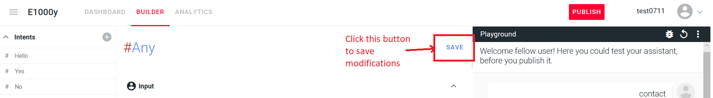

How to
Parameter
Opla Chatbot

Documentation and tricks
Presentation
The console builder
Documentation conventions
Diagram 1 : Pizzas!
Diagram 2 : Contact
#Any Intents
"No" loops
Conclusion
Presentation
Opla is an open source chatbot, which whoever can paramater and integrate as they wish. Here are some tips and tricks to learn how to write a conversation.
The console builder
is as shown :

it is divided into three parts :
- The playground, where the bot is tested
- The intents, which are the keywords used by user or computer to establish the conversation. Intents are preceded by a sharp key.
- Inputs and Outputs, specific to each Intent, which are the responses (Output) that the robot gives to each entered data (Input). It's really in Outputs that 80% of the conversation is set.
In the Outputs lies a menu with clickable items to set the interface up, we are going to explain some of them :


- Insert Variable assignment :
This button will enable getting information from user and stocking it for further display
- Insert code :
the syntax of the action code to be entered will be <action=name of action>

- Button :
Creates a button that will be clickable by the user and which will allow to standardize the inputs. One can create a Yes, No, or any desired input button.
- Trash :
This button is used to remove any of the three buttons above in Outputs, which must be done by first removing the internal text and then clicking the button, then the trash.

- Conditional :
It should also be noted that this menu proposes, when a new intent is opened, a three-pointed star called a conditional. This star is proposed as long as the Outputs do not contain unconditionnal outputs. Preexisting non-conditional outputs (like default "I don't understand") should then ball be erased using the minus on the line.

Note that the interface is not sensitive to the case of the inputs. When an intent is modified, a SAVE button appears on top of the page, intent section, next to the Playground which must be clicked in order to save the progress.

Documentation conventions
We will document the exchanges in the following way : the buttons will be written in square brackets and the lines of code and the variables between chevrons. However, do not confuse line of code (which is displayed in blue in the editor) and variable (which is displayed in green), otherwise the settings will not work. Reminders of settings will be made in parentheses, to keep the logical structure of the explanation, but will not be repeated in the bot.
#Hello
Input : Hello, hi
Output : Would you like a sweet pizza? [yes] [no] <action=sweetyesno>